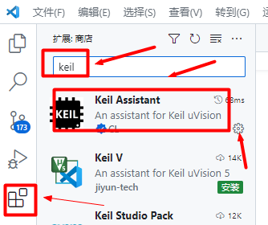
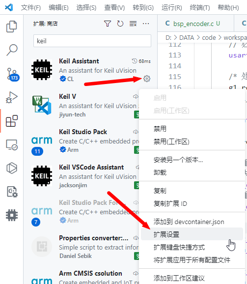
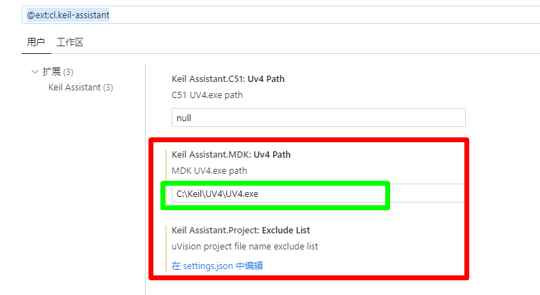
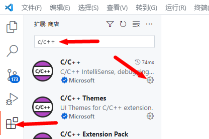
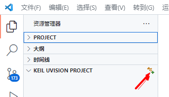
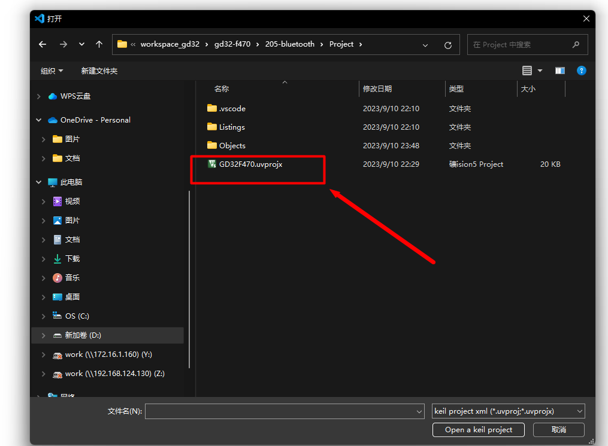

<!DOCTYPE lake>
<h2 data-lake-id="RJgrT" id="RJgrT"><span data-lake-id="ue8c5e84e" id="ue8c5e84e">创建工程</span></h2><p data-lake-id="u8645732e" id="u8645732e"><br/></p><p data-lake-id="u93f1efa3" id="u93f1efa3"><span data-lake-id="uf6b4b58e" id="uf6b4b58e">请跳转至文档: </span><a data-lake-id="u1c5ab6b2" href="../../GD32%EF%BC%8FSTM32%E5%BC%80%E5%8F%91/GD32%E4%BB%8B%E7%BB%8D%E5%8F%8A%E7%8E%AF%E5%A2%83%E6%90%AD%E5%BB%BA/GD32F4%E6%A0%87%E5%87%86%E5%A4%96%E8%AE%BE%E5%BA%93%F0%9F%8C%9F%F0%9F%8C%9F%F0%9F%8C%9F.html#TUwcZ" id="u1c5ab6b2" target="_blank"><span data-lake-id="uafceadae" id="uafceadae">https://www.yuque.com/icheima/gd32/dlkgvhqbne4kg8aw#TUwcZ</span></a></p><p data-lake-id="u58ed21e8" id="u58ed21e8"><span data-lake-id="uced234a3" id="uced234a3">​</span><br/></p><p data-lake-id="u65a700b3" id="u65a700b3"><span data-lake-id="u594bf08d" id="u594bf08d">​</span><br/></p><h2 data-lake-id="NKhTN" id="NKhTN"><span data-lake-id="u564485ee" id="u564485ee">VSCODE 环境搭建</span></h2><p data-lake-id="ufc0cf20d" id="ufc0cf20d"><span data-lake-id="u1bb1a3c6" id="u1bb1a3c6">在这一步我们来学习,如何使用vscode编写我们的keil工程的代码,  我们需要安装下面两个插件</span></p><ol list="u889b36f8"><li data-lake-id="u160a6b9e" fid="u9bd5a6dd" id="u160a6b9e"><span data-lake-id="u451c1327" id="u451c1327">Keil Assistant</span></li><li data-lake-id="ub82d02a5" fid="u9bd5a6dd" id="ub82d02a5"><span data-lake-id="u97c1266f" id="u97c1266f">c/c++</span></li></ol><p data-lake-id="u202f19b4" id="u202f19b4"><span data-lake-id="u457d4cd7" id="u457d4cd7">这两个插件在应用商店中,都能找到.</span></p><h3 data-lake-id="LmQvk" id="LmQvk"><span data-lake-id="u859398e2" id="u859398e2">安装Keil Assitant</span></h3><ol list="u707862a4"><li data-lake-id="u47e39980" fid="u47c45760" id="u47e39980"><span data-lake-id="u5ba34115" id="u5ba34115">在应用商店找到keil assistant插件, 单击安装按钮.</span></li></ol><p data-lake-id="uf3e5cc6b" id="uf3e5cc6b" style="text-align: center"></p><p data-lake-id="u09e93767" id="u09e93767"><br/></p><ol list="u50b32d09" start="2"><li data-lake-id="u196ab394" fid="u22e5ff21" id="u196ab394"><span data-lake-id="ua7a054c0" id="ua7a054c0">单击小齿轮, 打开它的扩展设置界面</span></li></ol><p data-lake-id="u7e6fe983" id="u7e6fe983" style="text-align: center"></p><p data-lake-id="u6c0b3513" id="u6c0b3513"><br/></p><p data-lake-id="u1caad655" id="u1caad655"><br/></p><p data-lake-id="ua86284cb" id="ua86284cb"><br/></p><ol list="udb519741" start="3"><li data-lake-id="uf6846f67" fid="ub299309c" id="uf6846f67"><span data-lake-id="u20527a3d" id="u20527a3d">在设置界面中, 填入Keil的启动程序, 在这一步我们其实就可以知道该插件其实调用的还是keil, 只不过它帮助我们实现了用vscode去编写代码,编译代码,以及下载代码</span></li></ol><p data-lake-id="ub009bbe5" id="ub009bbe5"></p><p data-lake-id="u94c2ea70" id="u94c2ea70"><br/></p><p data-lake-id="ub0aec6ed" id="ub0aec6ed"><br/></p><h3 data-lake-id="YG9Wc" id="YG9Wc"><span data-lake-id="u6857bfe8" id="u6857bfe8">安装C/C++</span></h3><p data-lake-id="udaf3d5b8" id="udaf3d5b8"><br/></p><p data-lake-id="u13b71c18" id="u13b71c18" style="text-align: center"></p><p data-lake-id="u626eab7f" id="u626eab7f" style="text-align: center"><br/></p><p data-lake-id="u6a104cf3" id="u6a104cf3" style="text-align: center"><br/></p><h3 data-lake-id="kWmfN" id="kWmfN"><span data-lake-id="u64c3c73d" id="u64c3c73d">打开keil工程</span></h3><ol list="uc075a1c7"><li data-lake-id="u6debbfa7" fid="u8f5cee51" id="u6debbfa7"><span data-lake-id="uf6ae238c" id="uf6ae238c">找到如下图所示条目, 单击小加号</span></li></ol><p data-lake-id="u1bd0fc53" id="u1bd0fc53" style="text-align: center"></p><p data-lake-id="u1730d2ba" id="u1730d2ba" style="text-align: center"><br/></p><ol list="u11f92c7d" start="2"><li data-lake-id="ucc05bd37" fid="u0fb027c3" id="ucc05bd37"><span data-lake-id="u7692a388" id="u7692a388">在弹出来的框中, 选择keil工程中的.uvprojx文件</span></li></ol><p data-lake-id="u1af8167a" id="u1af8167a" style="text-align: center"><br/></p><p data-lake-id="u5c269ea2" id="u5c269ea2" style="text-align: center"></p><p data-lake-id="u6e5fce9c" id="u6e5fce9c"><br/></p><ol list="uddd5f5d5" start="3"><li data-lake-id="u33a77efa" fid="u389c4fb2" id="u33a77efa"><span data-lake-id="u056de21f" id="u056de21f">完成以上步骤, 即可在vscode中编写代码</span></li></ol><p data-lake-id="u81a07d9c" id="u81a07d9c"><span data-lake-id="ufbee80e1" id="ufbee80e1">​</span><br/></p><p data-lake-id="u7df56cc8" id="u7df56cc8"><span data-lake-id="u1160d4e4" id="u1160d4e4">​</span><br/></p><p data-lake-id="uc9c61dc5" id="uc9c61dc5"><span data-lake-id="uc3b6c6bc" id="uc3b6c6bc">​</span><br/></p><p data-lake-id="u44c5cfd4" id="u44c5cfd4"><strong><span data-lake-id="ufd033703" id="ufd033703">Keil Assitant</span></strong><span data-lake-id="u7e9a6139" id="u7e9a6139"> 正如它的名字, 它是keil的vscode助手, 仅仅是实现了在vscode中</span><strong><span data-lake-id="u38bf7077" id="u38bf7077">编写,编译,下载</span></strong><span data-lake-id="u57ce6b38" id="u57ce6b38">的工程, 它最终还是需要依赖keil, 工程的配置还是得keil</span></p><p data-lake-id="u2dcb2bde" id="u2dcb2bde"><span data-lake-id="ue1f567e1" id="ue1f567e1">使用vscode能提升我们的开发效率,  所以推荐keil搭建,配置工程, vscode编写代码</span></p><p data-lake-id="u0dc11d98" id="u0dc11d98" style="text-align: center"><br/></p><p data-lake-id="u1009b286" id="u1009b286" style="text-align: center"><br/></p>